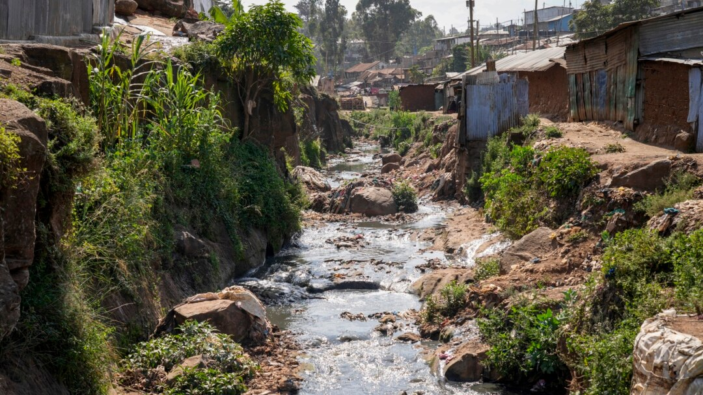
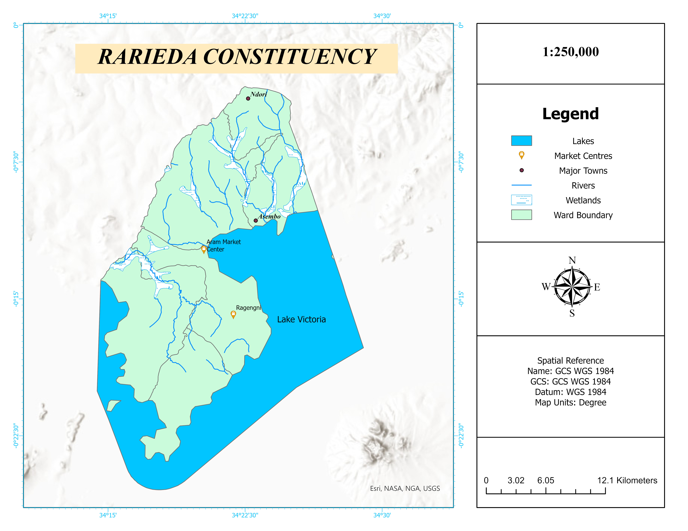

I merge geospatial intelligence with software engineering to create innovative, data-driven solutions for real-world challenges.
I’m Sylvester Onyango, a passionate Geospatial Engineer with expertise in GIS, remote sensing, Survey and spatial data analysis. My work blends technical precision with creative problem-solving to produce impactful geospatial insights. I am driven by a commitment to environmental conservation, sustainable development, and the power of data-driven decision-making.
 An interactive web map exploring pollution hotspots along the Nairobi River using satellite imagery, citizen feedback from Kibera, and spatial analysis. Includes before/after views and storytelling elements.
 Conducted a network-based spatial analysis to determine travel times to health facilities, overlaid with malaria incidence data. Identified underserved areas to inform health policy.
Developed a supervised classification pipeline using Sentinel-2 imagery in Google Earth Engine. Applied Random Forest algorithm to detect temporal land cover changes over 7 years.
Created a Google Apps Script tool to automate tracking of group savings and contributions. Boosted financial transparency and reduced manual errors for community savings groups.
Designed and deployed a responsive full-stack web app with CRUD functionality, MongoDB integration, and user authentication. Built as a capstone to demonstrate end-to-end development skills.
Performed multi-criteria spatial analysis in QGIS to identify ideal locations for EV charging stations. Project supported a green transport initiative during a sustainability conference.
Feb 2025 – Present · Nairobi County, Kenya · Remote
Feb 2025 – Apr 2025 · Remote
Nov 2023 – Feb 2025 · Nairobi County, Kenya · Hybrid
Aug 2024 – Oct 2024 · Ruaraka, Nairobi County, Kenya
Jan 2022 – Dec 2024 · Nairobi County, Kenya · Hybrid
Bachelor of Science (BSc), Geospatial Engineering
Sep 2019 – May 2025
Specialized in GIS, Remote Sensing, and Surveying with hands-on experience in ArcGIS Pro, Google Earth Engine, and photogrammetry. Led multiple mapping projects integrating spatial analysis, cartography, and data visualization. Strengthened leadership and teamwork through active roles in student organizations including YouthMappers UoN Chapter.
The Climate Reality Project · Issued Jun 2025
Credential ID: 8d36b000-b5cd-489c-94ec-22248ff1a2c8
Skills: Climate Change · Sustainability · Environmental Advocacy · Community Engagement · Climate Justice
Extern · Issued Apr 2025
Certificate: 140045336
Skills: Water Conservation · Data Visualization · Community Health
University of Nairobi · Issued Mar 2025
Esri Eastern Africa · Issued Mar 2025
Skills: Spatial Analysis
OSM Kenya · Issued Dec 2024
Proud to have completed the OSM Quality Training, enhancing skills in data quality and validation.
Esri · Issued Oct 2024 · Expires Oct 2034
Skills: Data Visualization
Have a project, idea, or just want to connect? Reach out, and I’ll get back to you as soon as possible.